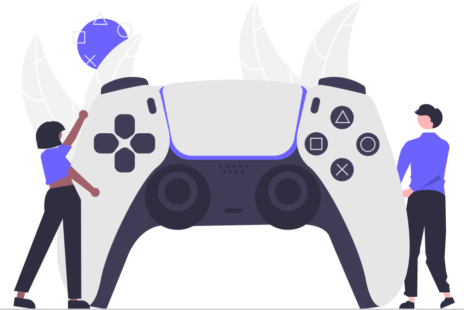

Meu Top 10 Jogos
Olá, meu nome é Victor Pimenta e sou gamer há mais de 15 anos! Sempre vi videogames como o meu hobbie principal, e não penso em largá-lo de jeito nenhum. Meus gêneros de jogos favoritos principais são: Plataforma, Soulslike e Corrida. Em seguida, segue um top 10 demonstrando o que eu mais amo neste universo dos jogos!!
